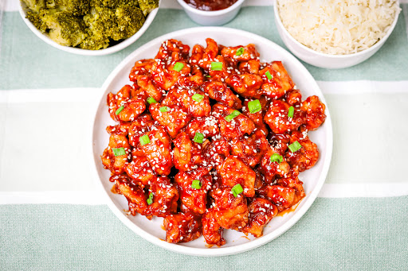

A newer creation, using a sugar free orange glaze, this one is to die for!
What you'll need:
- Two Chicken Bites
- Two Steak Bites
- Frozen Broccoli
- G Hughes Orange marinade
- Stovetop pan for heating
- Foodsafe bowls for distributing
And now for the cooking instructions:
- Grab your stovetop pan, and set the heat to medium.
- Start heating your frozen broccoli in the microwave, according to package instructins. (While the
pan is
heating)
- After 5 minutes (about when the vegetables are done), oil up your pan, and add your chicken and steak.
- Heat up the chicken and steak, season to taste if desired.
- Drop the heat to low so you don't overcook the steak bites, and pour over 90 grams of the orange
marinade!
- Grab your foodsafe bowls, and evenly split the heated vegetables.
- After 4 minutes on heat, evenly distribute the meats as well.
- Enjoy your meal, and now you also have an equal sized meal for later!
I sometimes trade the Orange marinade for straight Teriyaki marinade, for a different flavor profile.
This one is a great way to shake up the BBQ Chicken and Steak meal.
Here's are the macros break down, as well!
- Total Calories: 335
- Protein: 53g
- Carbs: 15
- Fat: 6